Manuel d'utilisation · version de la phase 1 · 26 octobre 2026
restau-bar-pos
La caisse et la gestion de votre restaurant-bar, de votre lounge ou de votre nightclub, avec une vitrine publique que vos clients ouvrent en scannant un code QR.
1Bienvenue
restau-bar-pos réunit trois espaces, qui partagent les mêmes produits, les mêmes prix et les mêmes devises.
| Espace | Pour qui | Adresse |
|---|---|---|
| La vitrine | Vos clients : présentation de l'établissement, horaires et menu avec les prix. | monbar.<domaine>/ |
| La caisse | Les barmans, serveurs et caissiers : produits en grille et ticket. | monbar.<domaine>/caisse |
| La gestion | Le propriétaire et le gérant : catalogue, établissements, devises, codes QR. | monbar.<domaine>/gestion |
Chaque client a sa propre adresse (son sous-domaine) et ses propres données. Tout fonctionne dans un navigateur, sur ordinateur, tablette ou téléphone, en français et en anglais.
Les captures de ce manuel viennent de la version de démonstration : un restaurant-bar, Le Comptoir du Lac, et un nightclub, Volcano Club, à Goma. Chaque écran est montré sur ordinateur et sur téléphone.
Le design s'adapte au lieu. Le nightclub et le lounge s'affichent en thème « nuit » (sombre), le restaurant-bar en thème « jour » (clair). Chacun peut changer de thème avec le bouton ◐, et le choix est mémorisé sur l'appareil.
2Premiers pas
Se connecter
- Ouvrez monbar.<domaine>/gestion.
- Saisissez votre adresse e-mail et votre mot de passe, puis touchez Se connecter.
Après 5 essais manqués, la connexion est bloquée pendant 5 minutes.
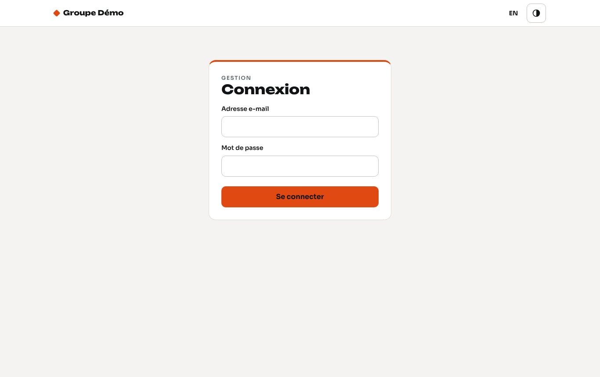
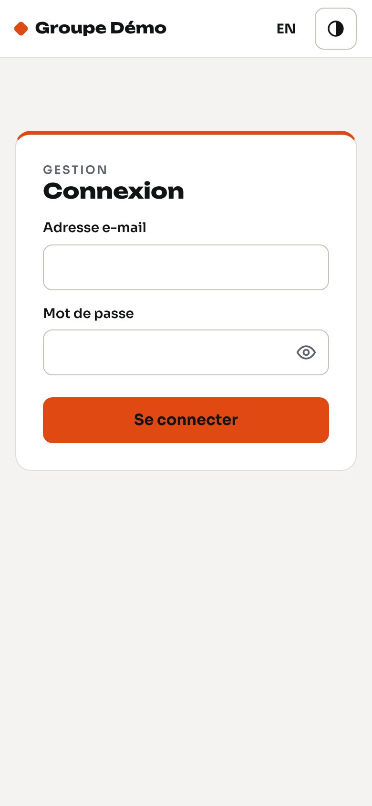
Le tableau de bord
Il résume vos établissements, le nombre de produits, les scans de codes QR sur 7 jours et les devises actives avec leur taux. Le menu du haut mène à chaque écran : Tableau de bord, Caisse, Catalogue, Établissements, Devises et taux, Médiathèque, Codes QR, Mon compte, Aide, Voir la vitrine. En haut à droite : la langue (FR / EN), le thème ◐ et Se déconnecter.
Aide ouvre ce manuel dans l'application, avec un lien pour télécharger sa version PDF.
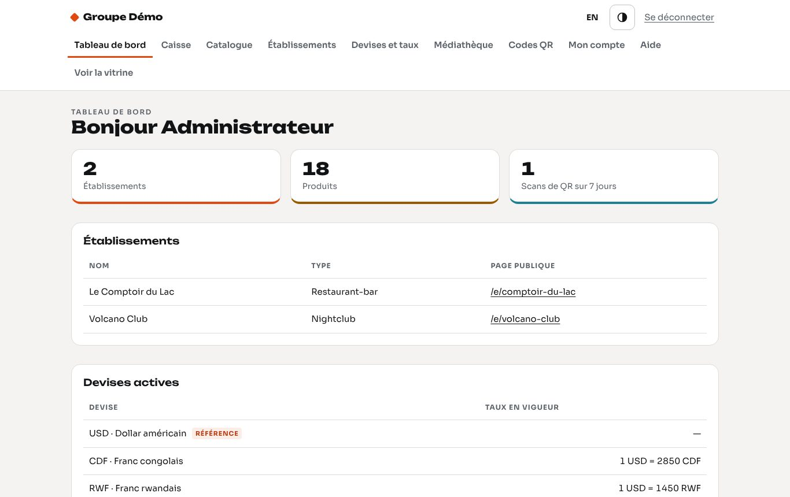
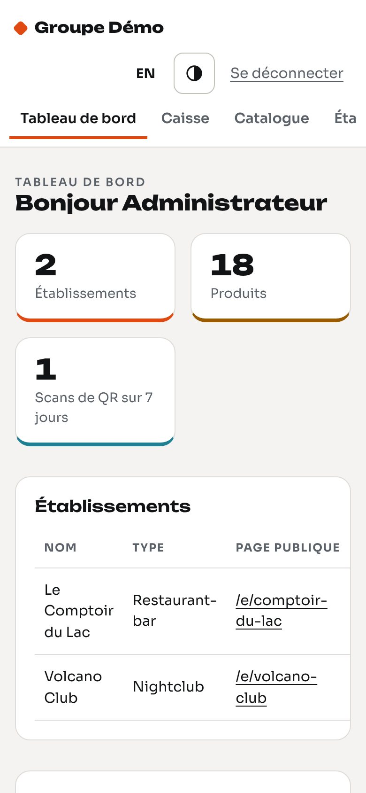
L'ordre conseillé pour démarrer
- Devises et taux : vérifiez la devise de référence et saisissez le taux du jour des autres devises.
- Établissements : informations, horaires, devises acceptées et zones (terrasse, carré VIP…).
- Catalogue : créez vos catégories, puis vos produits avec leurs formats et leurs prix.
- Codes QR : créez un code par zone et imprimez les chevalets de table.
- La caisse : ouvrez-la sur la tablette ou le téléphone du comptoir.
3La vitrine
C'est ce que voient vos clients quand ils scannent un code QR ou ouvrent votre adresse. Aucune connexion n'est nécessaire.
La page d'accueil
Si vous avez plusieurs établissements, l'accueil les présente avec leur type, leur slogan et l'indication « Ouvert en ce moment » ou « Fermé ». Avec un seul établissement, le visiteur arrive directement sur sa page.

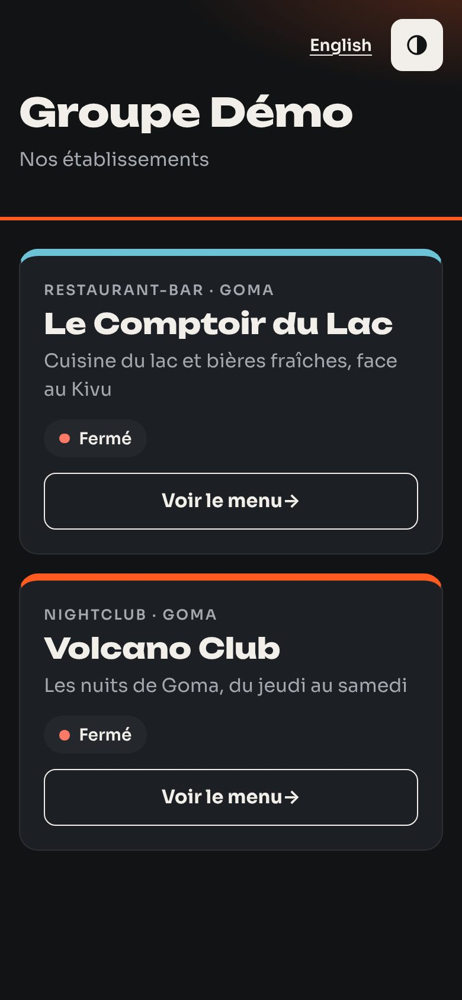
La page d'un établissement
En haut : le nom, le type, le slogan, la photo de couverture et l'état d'ouverture calculé avec les horaires (« Fermé · ouvre à 17:00 »). Juste en dessous, une barre qui reste visible quand on fait défiler la page :
- la devise des prix (USD, CDF, RWF…), parmi celles que l'établissement accepte ;
- la langue (English / Français) ;
- le thème ◐ ;
- les catégories, pour aller directement aux bières, aux cocktails ou aux plats.


Le menu
Chaque produit montre son illustration ou sa photo, son nom, sa description, ses badges (Populaire, Nouveau, Épicé), ses allergènes et le prix de chaque format (verre, dose, bouteille…). Un produit en rupture est marqué Épuisé et son prix est barré. La recherche filtre le menu dès la première lettre, sans tenir compte des accents.
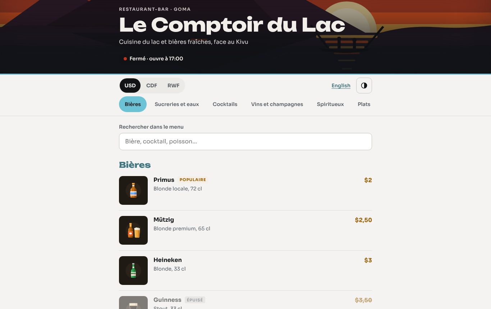

Les prix d'une zone
Un code QR posé dans une zone (par exemple le carré VIP) ouvre le menu avec les prix de cette zone : l'étiquette de la zone s'affiche dans la barre. Ici, le carré VIP du club, avec les prix en francs congolais arrondis à 100 FC.
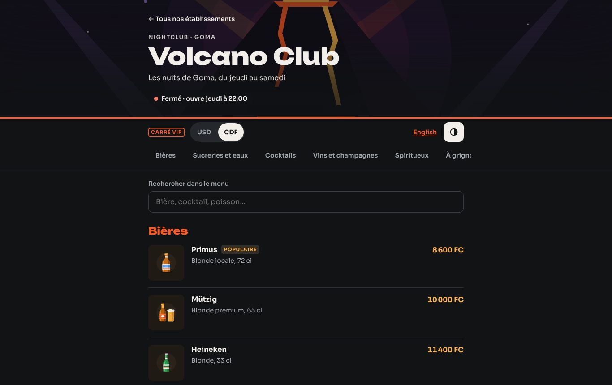
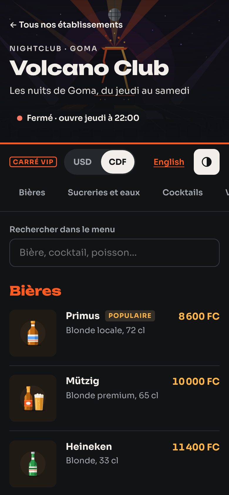
Horaires et contact
En bas de page : les horaires de chaque service, regroupés par jours (« Lun – Jeu »), l'adresse avec le lien vers la carte, le téléphone, WhatsApp et les réseaux sociaux.
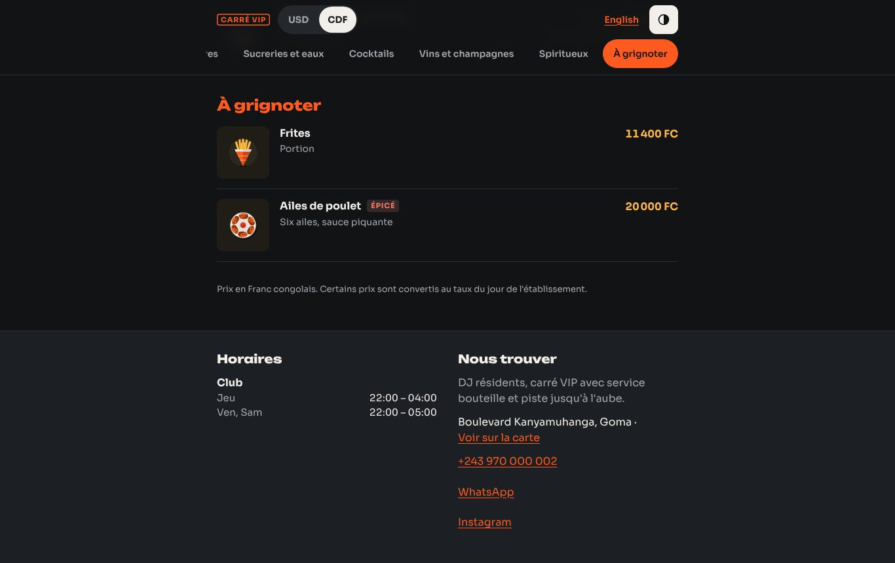
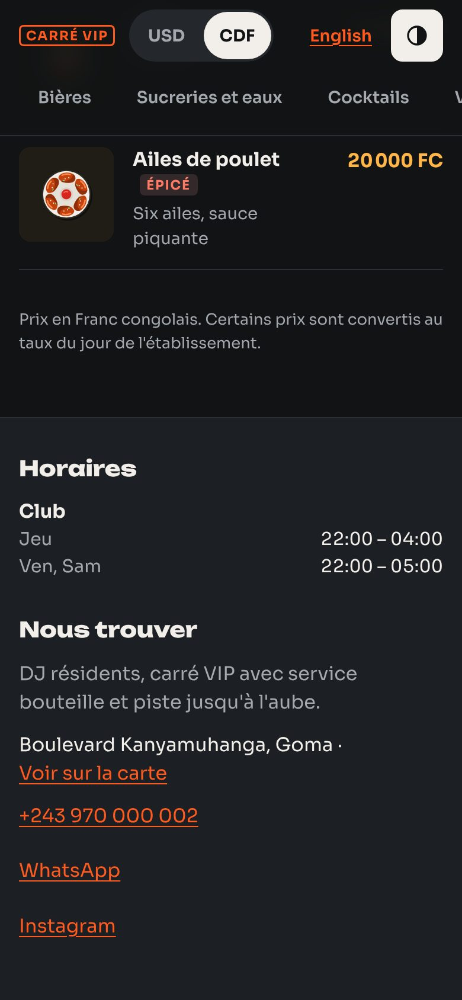
4La caisse
Les produits sont en grille : un toucher ajoute un article au ticket. La caisse s'ouvre depuis le menu de gestion (Caisse) ou à l'adresse /caisse.
À savoir dans cette versionLe ticket et les totaux fonctionnent, mais les ventes ne sont pas encore enregistrées : le bouton Encaisser arrive avec la phase 3 (encaissement, sessions de caisse, stock). Le ticket en cours est gardé tant que l'onglet du navigateur reste ouvert.
Choisir l'établissement et la zone
En haut à gauche, choisissez l'établissement puis la zone. La zone applique sa grille de prix : au carré VIP, les prix VIP.
La grille des produits
- 5 tuiles par ligne sur ordinateur et tablette, 3 sur téléphone.
- Chaque catégorie a sa couleur, reprise sur les onglets, les tuiles et les lignes du ticket.
- Les onglets en haut filtrent la grille ; Tout montre tous les produits.
- La pastille sur une tuile indique combien d'articles de ce produit sont déjà dans le ticket.
- Un produit épuisé est grisé et ne peut pas être touché.
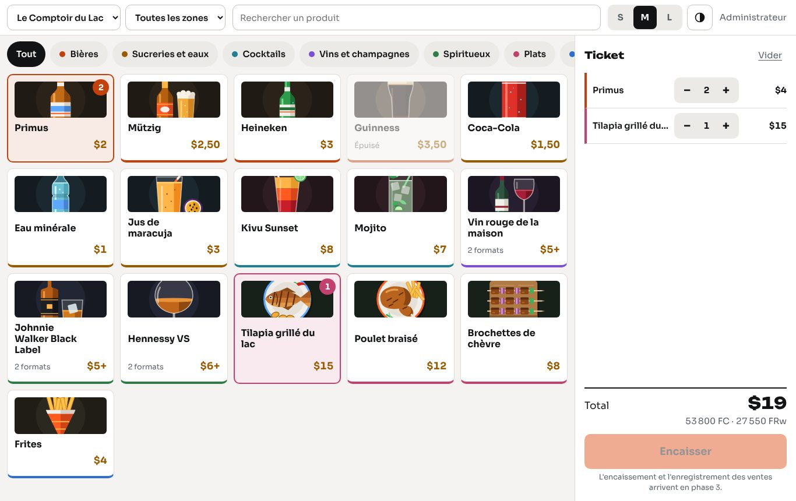
Les produits à plusieurs formats
Quand un produit se vend en plusieurs formats (dose de 4 cl ou bouteille de 70 cl), sa tuile indique « 2 formats » et le prix le plus bas suivi de « + ». Un toucher ouvre une fenêtre qui propose chaque format avec son prix.

Le ticket
- Les boutons − et + changent la quantité ; à zéro, la ligne disparaît.
- Le total s'affiche dans la devise principale et, juste en dessous, dans chaque autre devise acceptée. Les prix fixés en francs (par exemple 5 500 FC pour la Primus) sont respectés.
- Vider efface tout le ticket.
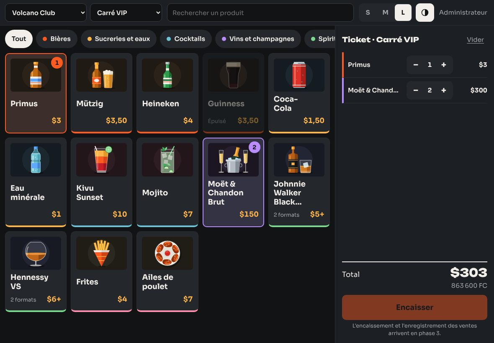

Aller plus vite
- Recherche : la touche / place le curseur dans la recherche ; Entrée ajoute le produit s'il est le seul résultat ; Échap efface la recherche.
- Taille des tuiles : S, M ou L règlent la hauteur des tuiles et la taille du texte. Le nightclub démarre en L.
- Thème : ◐ bascule entre jour et nuit. Le réglage est mémorisé par appareil et par établissement.
Sur téléphone
La grille prend tout l'écran. Une barre en bas résume le ticket (« 3 articles · voir le ticket » et le total) ; un toucher ouvre le ticket dans un panneau, fermé avec ✕.
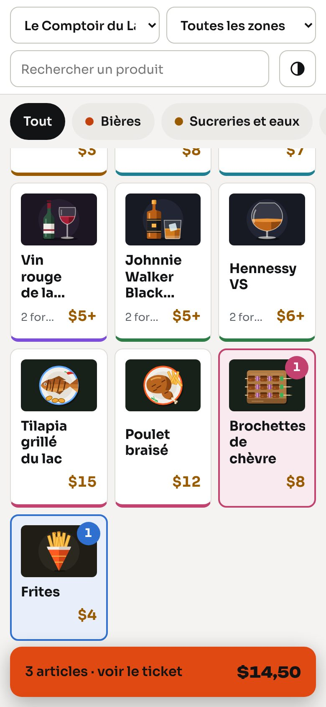
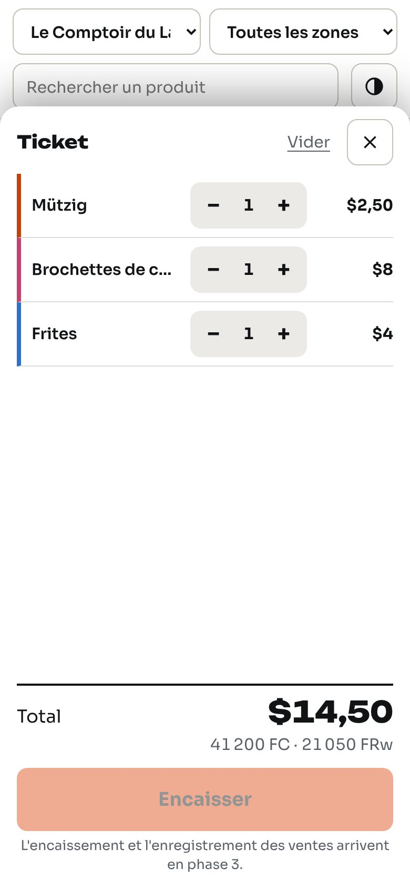
5Le catalogue
Vos produits, tels qu'ils apparaissent sur le menu et à la caisse. Menu de gestion → Catalogue.
La liste des produits
- Les produits sont groupés par catégorie, avec leur illustration, leur prix principal et les établissements où ils sont vendus.
- Filtres : catégorie, établissement et recherche par nom.
- Le bouton Disponible d'un produit le passe en épuisé d'un seul toucher, sans ouvrir sa fiche. Un second toucher le remet en vente. Le changement est immédiat sur la vitrine et la caisse.
- Les flèches changent l'ordre des produits dans leur catégorie.
- Voir les produits désactivés retrouve les produits retirés de la vente, pour les réactiver.
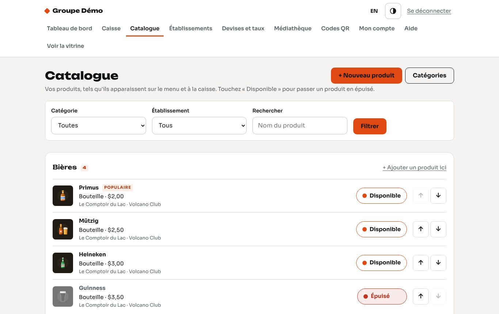
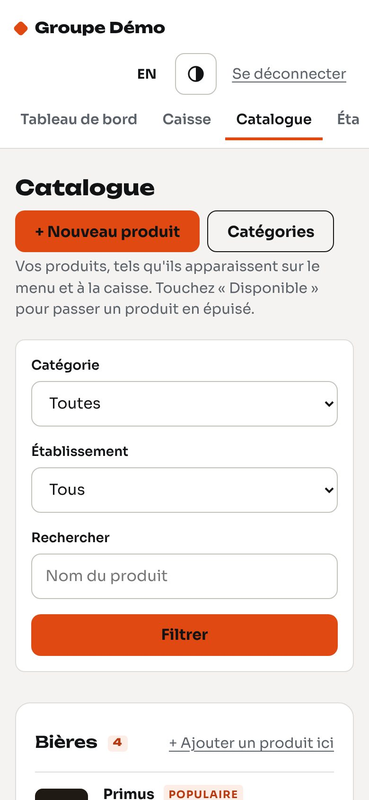
Créer un produit
- Touchez Nouveau produit.
- Choisissez la catégorie, écrivez le nom en français (le nom anglais est facultatif : laissé vide, le français est affiché).
- Indiquez le premier format (par exemple « Bouteille ») et son prix au moins dans la devise de référence. Les autres devises sont calculées avec le taux du jour si vous les laissez vides.
- Touchez Créer le produit. La fiche complète s'ouvre : vous pouvez ajouter une photo et d'autres formats.
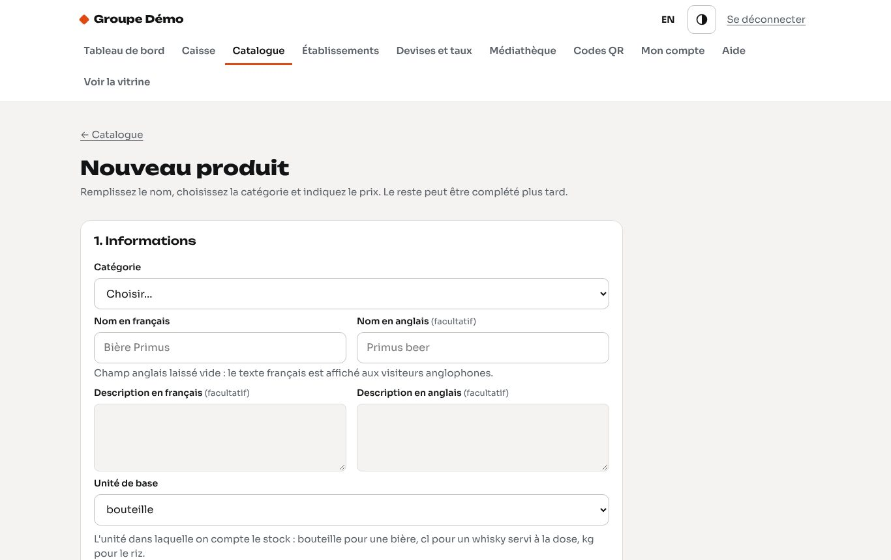
La fiche produit, section par section
Le sommaire en haut de la fiche mène à chaque section. Chaque section a son propre bouton d'enregistrement. Exemple : le Johnnie Walker Black Label, vendu à la dose et à la bouteille.
1. Informations
Catégorie, nom et description en français et en anglais, unité de base (l'unité dans laquelle on compte le stock : bouteille pour une bière, cl pour un whisky servi à la dose, kg pour le riz), badges du menu et allergènes.
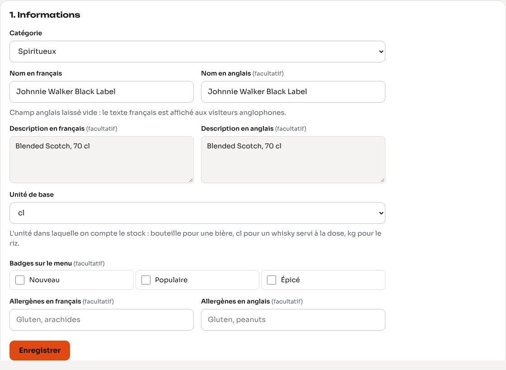
2. Photo
Le champ photo accepte une image de quatre façons :
- glisser-déposer un fichier depuis l'ordinateur sur la zone de l'image ;
- Choisir un fichier (sur téléphone : appareil photo ou galerie) ;
- coller une image copiée (Ctrl+V) ;
- Choisir dans la médiathèque une image déjà enregistrée (voir le chapitre Médiathèque).
Une image ajoutée ici entre aussi dans la médiathèque. Elle est redimensionnée automatiquement (JPEG, PNG ou WebP, 8 Mo au plus). Touchez ensuite Enregistrer la photo. Indiquez son crédit (auteur et licence) si elle n'est pas de vous : il s'affiche en petit sous la photo sur la vitrine, et il est pré-rempli si l'image de la médiathèque en a un. Retirer la photo enlève l'image du produit sans l'effacer de la médiathèque.
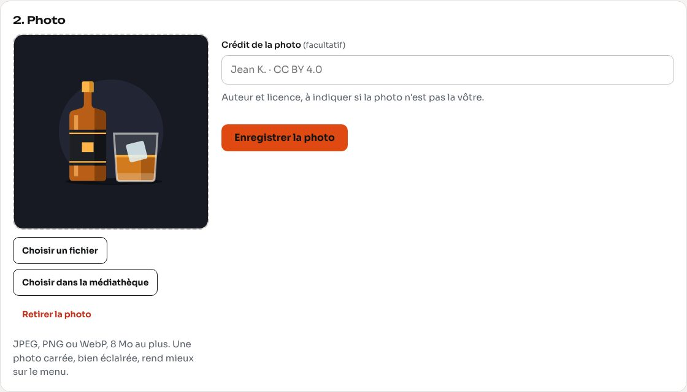
3. Formats et prix
Un format est une façon de vendre ou d'acheter le produit, exprimée en unité de base : bouteille = 1, casier = 12, dose = 4 cl. Cochez Vendu aux clients pour qu'il apparaisse sur le menu et à la caisse, Acheté aux fournisseurs pour les achats (le casier, par exemple).
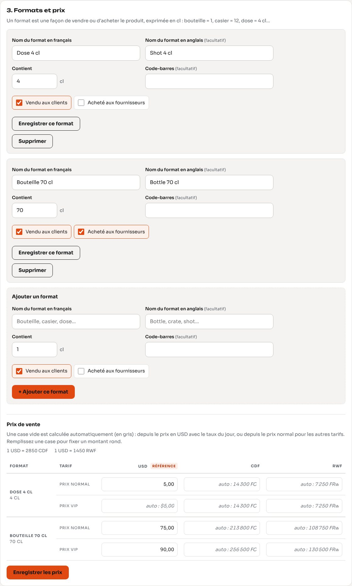
Le tableau des prix de vente croise les formats, les tarifs (normal, VIP…) et les devises.
- Une case vide est calculée automatiquement, et le montant calculé est affiché en gris dans la case : depuis le prix en devise de référence avec le taux du jour, ou depuis le prix normal pour les autres tarifs.
- Remplissez une case pour fixer un montant rond, par exemple 5 500 FC au lieu de 5 700 FC.
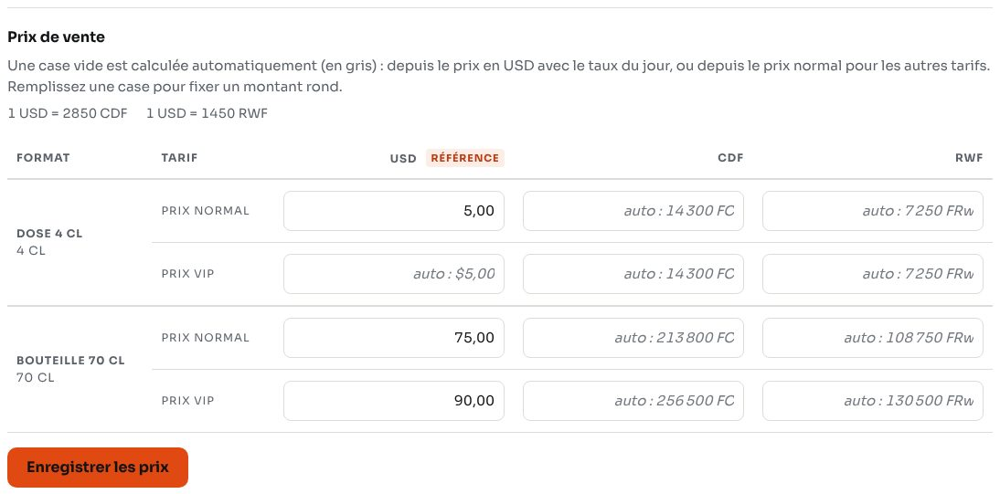
4. Où il est vendu
Cochez les établissements qui proposent le produit. Visible sur le menu public : décoché, le produit reste vendu à la caisse mais n'apparaît pas sur la vitrine. Disponible : décoché, il est épuisé.
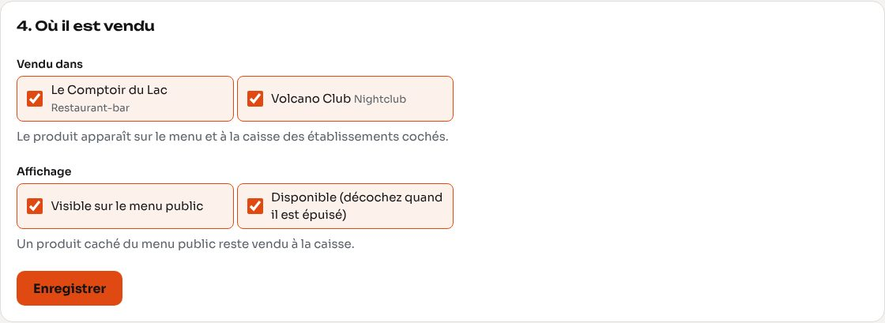
5. Désactiver
Pour un produit que vous ne vendez plus : il disparaît du menu et de la caisse mais reste dans l'historique. La confirmation se fait dans la page ; vous pourrez le réactiver plus tard.
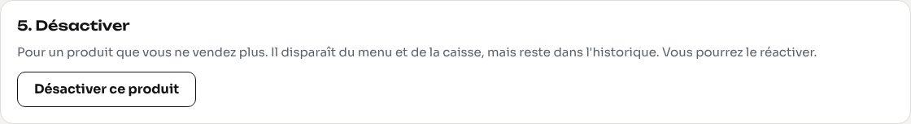
Sur téléphone
La fiche passe sur une seule colonne. Le tableau des prix défile horizontalement dans son cadre.
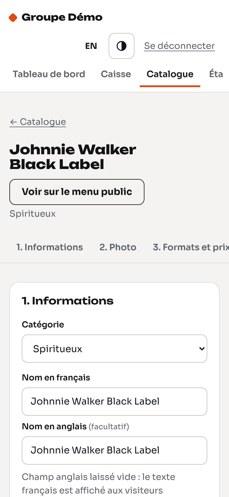
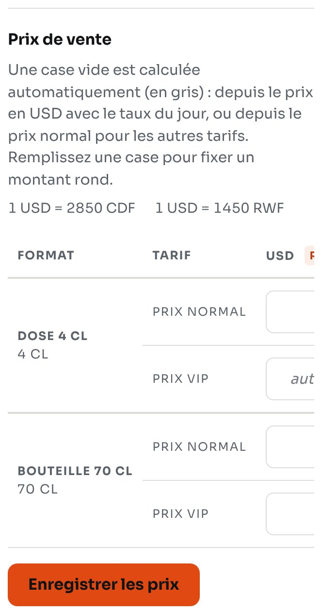
Les catégories
Catalogue → Catégories. Ajoutez une catégorie (nom en français et en anglais), cachez-la du menu public si besoin, et changez l'ordre avec les flèches : c'est l'ordre des onglets de la vitrine et de la caisse. Une catégorie qui contient des produits actifs ne peut pas être supprimée.

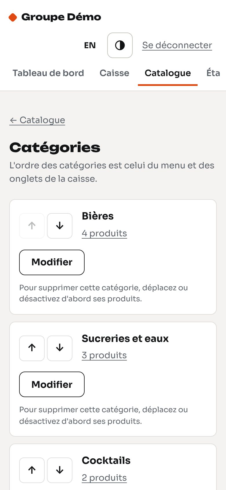
6Les établissements
Vos lieux : présentation, horaires, zones et prix affichés sur leur vitrine. Menu de gestion → Établissements.
La liste montre chaque établissement avec son type, son état ouvert ou fermé en ce moment et le lien vers sa vitrine. Nouvel établissement demande seulement le nom et le type ; le reste peut être complété ensuite.
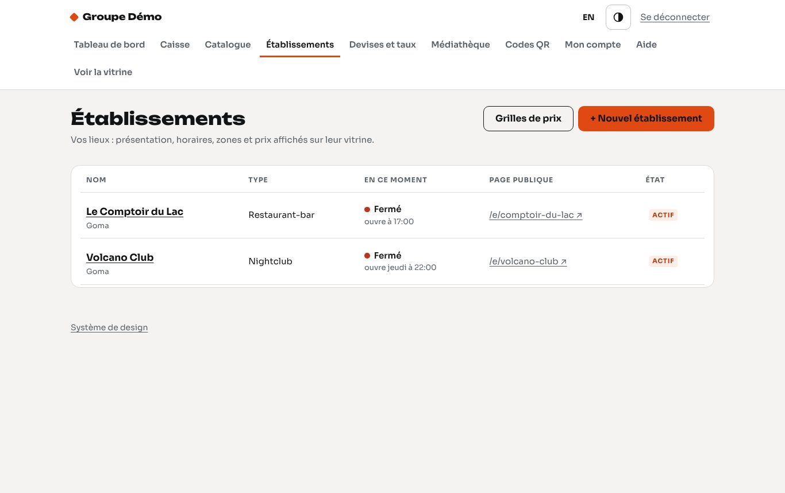
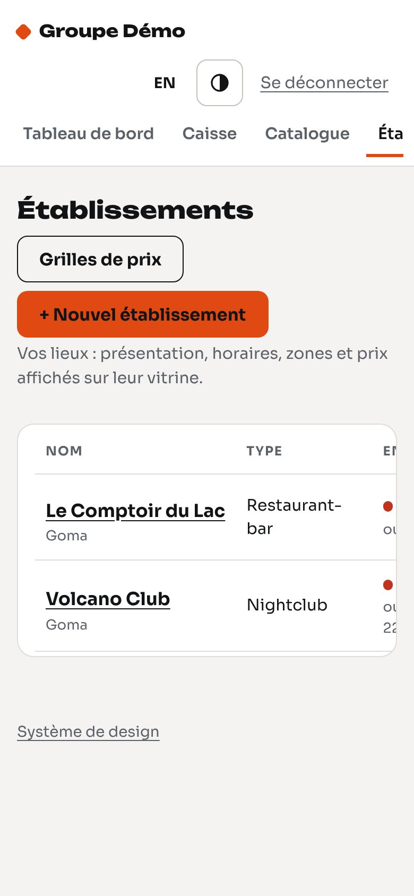
Informations
Nom, adresse web (proposée à partir du nom, par exemple /e/volcano-club), type (restaurant-bar, lounge ou nightclub : le type choisit aussi le thème de la vitrine et de la caisse), slogan et description en deux langues, adresse, lien de carte, téléphone, WhatsApp (avec l'indicatif +243), e-mail et réseaux sociaux.
AttentionChanger l'adresse web casse les liens déjà partagés. Les codes QR, eux, continuent de marcher.
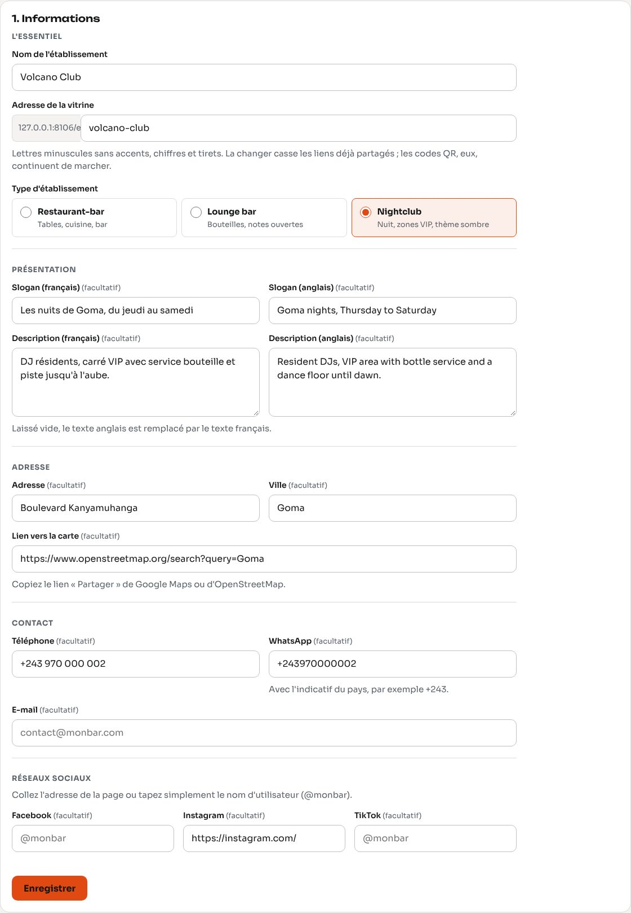
Apparence
La couleur d'accent de la vitrine (décochez pour garder la couleur du design), le logo et la photo de couverture, avec son crédit. Le logo et la couverture utilisent le même champ image que les produits : glisser-déposer, choix d'un fichier, collage ou choix dans la médiathèque. Le texte posé sur la couleur choisie reste toujours lisible : il passe en noir ou en blanc automatiquement.
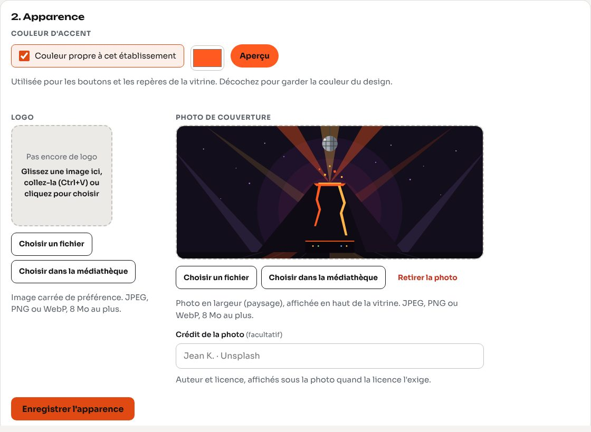
Prix et devises
La grille de prix par défaut (appliquée partout, sauf dans les zones qui ont la leur), les devises acceptées (affichées dans le sélecteur de la vitrine) et la devise affichée à l'arrivée du visiteur.
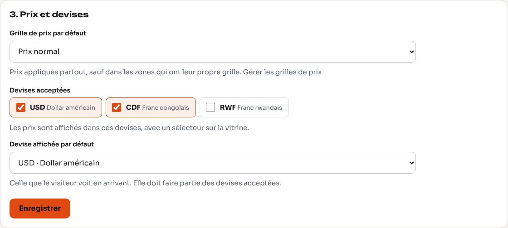
Horaires
Une ligne par service (restaurant, bar, club…) et par horaire : nom du service, jours cochés, heure d'ouverture et de fermeture. Une fermeture plus tôt que l'ouverture veut dire le lendemain : un club ouvert de 22:00 à 05:00 compte pour la soirée où il ouvre. Ajouter une ligne crée un nouveau créneau.
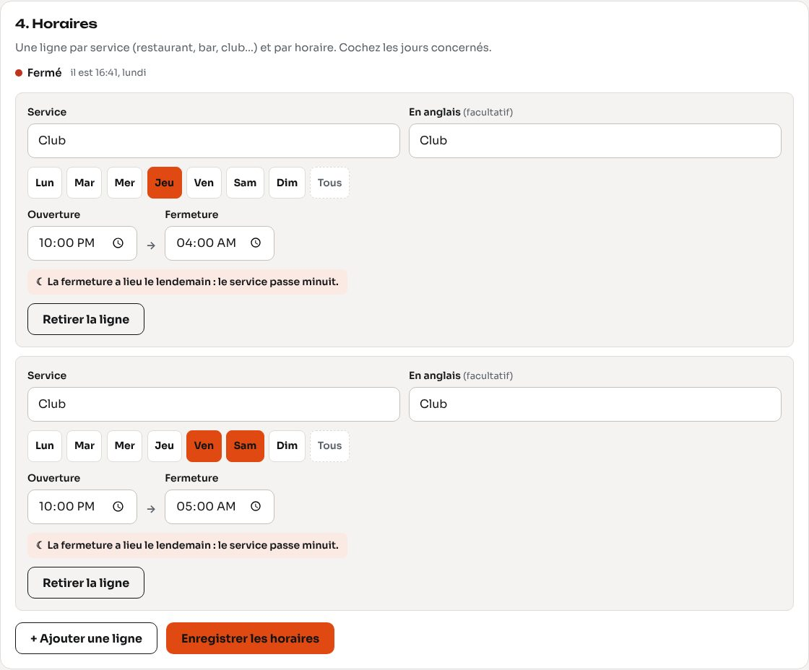
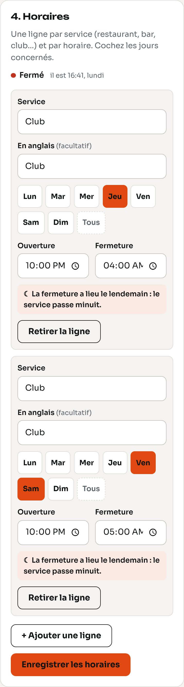
Zones
Salle, terrasse, piste, carré VIP… Une zone peut avoir ses propres prix (choisissez sa grille). Un code QR posé dans la zone affiche ces prix, et la caisse les applique quand on choisit la zone.
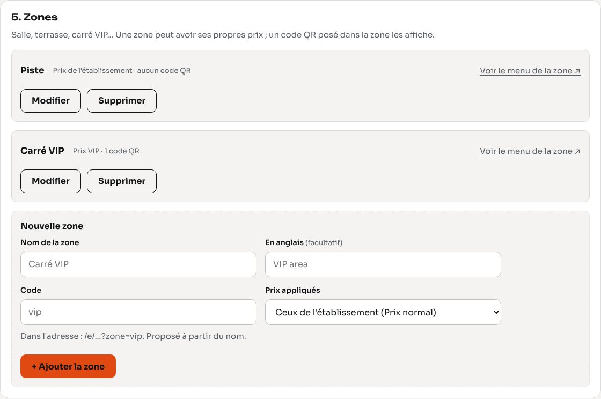
Activer ou désactiver
Un établissement désactivé disparaît de la vitrine et de la caisse. Rien n'est effacé : sa réactivation le rend visible tout de suite, codes QR compris.
Les grilles de prix
Depuis la liste des établissements ou la section Prix et devises. Une grille regroupe un jeu de prix : normal, VIP, nuit, gros… Les prix eux-mêmes se saisissent sur la fiche de chaque produit. Une grille utilisée ne peut pas être supprimée.

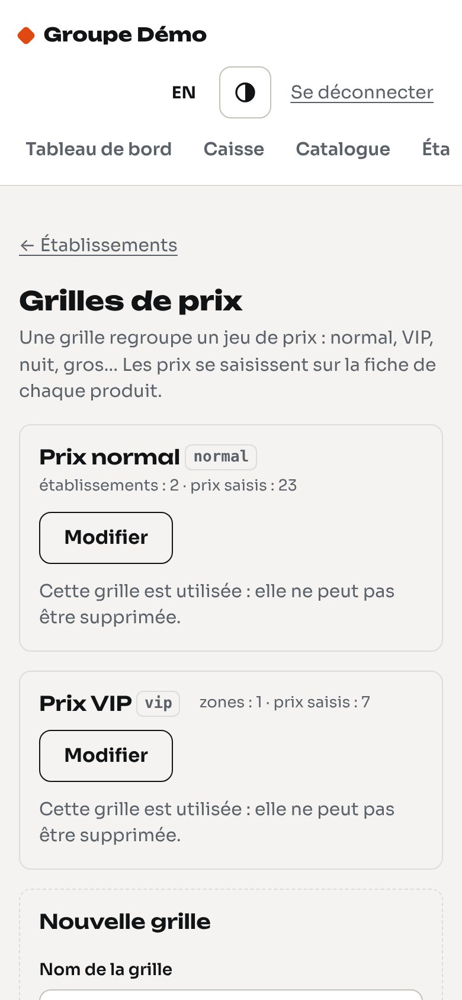
7Médiathèque
Toutes les images de vos produits et de vos établissements, au même endroit. Une même image peut servir à plusieurs endroits. Menu de gestion → Médiathèque.
Ajouter des images
- Glissez une ou plusieurs images depuis l'ordinateur sur la grande zone en haut de la page (ou n'importe où sur la page). Vous pouvez aussi toucher la zone pour choisir des fichiers, ou coller une image avec Ctrl+V.
- Chaque image affiche son aperçu et une barre de progression, puis « Ajoutée ». Une image refusée (type ou poids) affiche la raison.
Formats acceptés : JPEG, PNG ou WebP, 8 Mo au plus. Les images sont redimensionnées à 1600 px de côté au plus. Sur téléphone, la zone devient un grand bouton Ajouter des images.
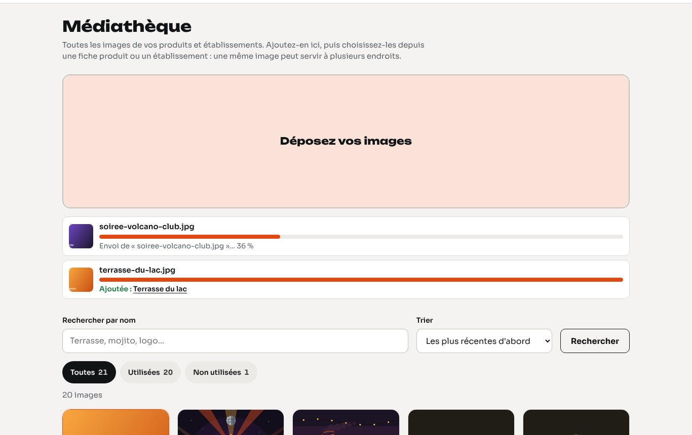
Retrouver une image
La grille montre chaque image avec son nom, ses dimensions, son poids et le nombre d'endroits où elle sert. Recherchez par nom, filtrez Toutes, Utilisées ou Non utilisées, et triez par date ou par nom.

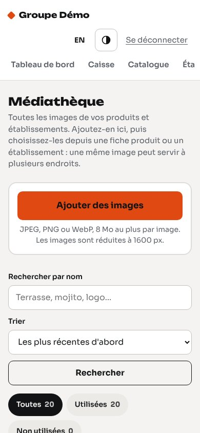
La fiche d'une image
Touchez une image pour ouvrir sa fiche : grand aperçu, nom, textes alternatifs en français et en anglais (une description courte de l'image, lue par les lecteurs d'écran), crédit, et la liste des produits et établissements qui l'utilisent, avec un lien vers chacun. Copier l'adresse copie le lien de l'image.
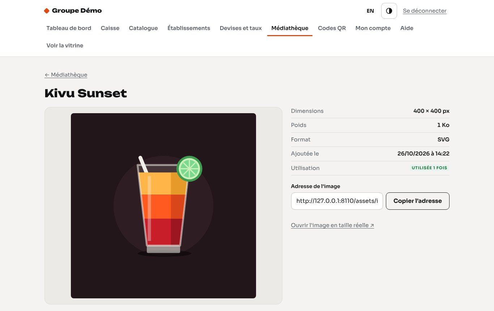
Supprimer une image
Seule une image qui ne sert nulle part peut être supprimée, avec une confirmation dans la page. Si elle est encore utilisée, la fiche indique où : changez d'abord l'image de ces produits ou établissements.
Choisir une image depuis une fiche
Sur la fiche d'un produit (photo) ou d'un établissement (logo, couverture), Choisir dans la médiathèque ouvre une fenêtre avec la grille et la recherche. Touchez une image pour la choisir, puis enregistrez la section. Vous pouvez aussi glisser une nouvelle image dans la fenêtre : elle est ajoutée à la médiathèque et choisie aussitôt.
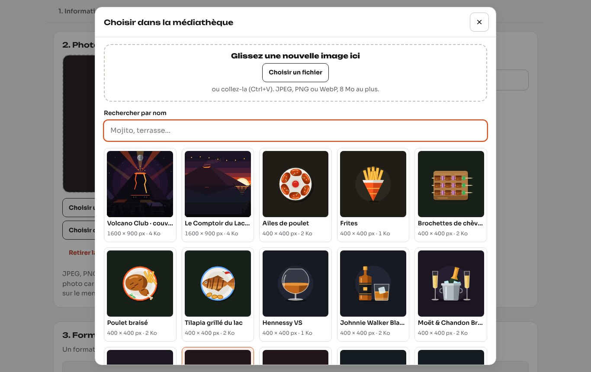
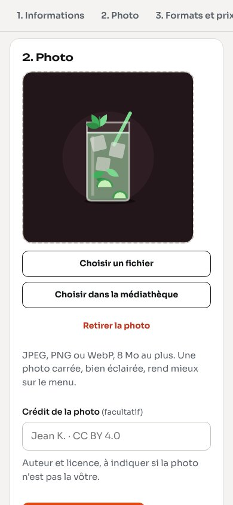
Les images ne disparaissent pas par erreur.Remplacer ou retirer la photo d'un produit, ou le logo d'un établissement, ne supprime jamais le fichier : l'image reste dans la médiathèque et peut resservir.
8Devises et taux
Les devises acceptées par vos établissements et le taux du jour de chacune. Menu de gestion → Devises et taux.
La devise de référence
Les prix du catalogue sont saisis dans cette devise (USD dans la démonstration). Les autres devises sont calculées avec leur taux, sauf les prix fixés à la main. On ne peut changer de devise de référence que tant qu'aucun prix n'est enregistré dans l'ancienne ; l'écran explique pourquoi quand c'est impossible.

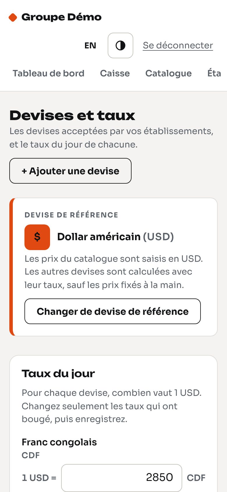
Saisir le taux du jour
- Dans Taux du jour, changez seulement les taux qui ont bougé : « 1 USD = … CDF ».
- Un exemple calculé en direct à côté du champ montre le résultat avec l'arrondi de la devise (« 10 $ → 28 500 FC »).
- La date de début vaut « maintenant » par défaut. Une date plus tard programme le changement.
- Touchez Enregistrer les taux. Les prix convertis changent aussitôt sur la vitrine et la caisse ; les prix fixés à la main ne bougent pas.
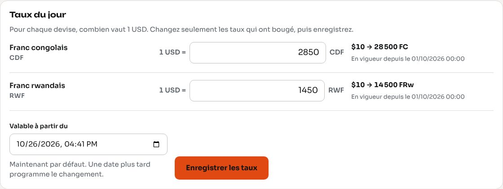
Ajouter ou modifier une devise
Ajouter une devise, ou touchez une devise de la liste :
| Champ | À quoi il sert |
|---|---|
| Code | 3 lettres : USD, CDF, EUR, RWF… |
| Symbole | $, FC, FRw, € ; avant ou après le montant. |
| Décimales | 2 pour le dollar ou l'euro (2,50), 0 pour le franc congolais. |
| Arrondi | 0 = pas d'arrondi. Avec 100, un prix converti de 28 437 FC devient 28 400 FC. |
| Position | L'ordre d'affichage des devises. |
Une devise désactivée n'apparaît plus sur la vitrine ni à la caisse ; ses réglages sont gardés. La devise de référence reste toujours active.
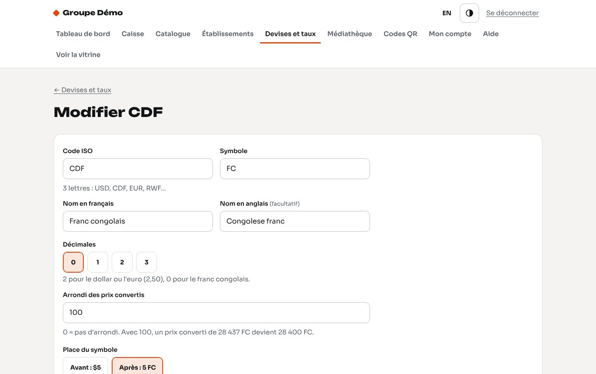
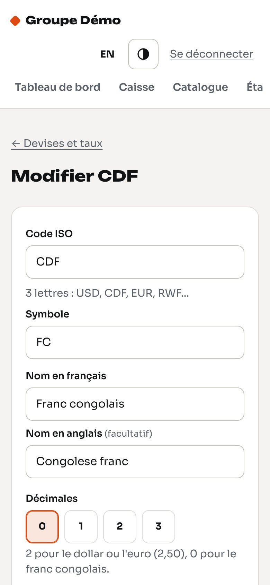
L'historique
Les 30 derniers taux, avec la date, le taux et le nom de la personne qui l'a saisi.
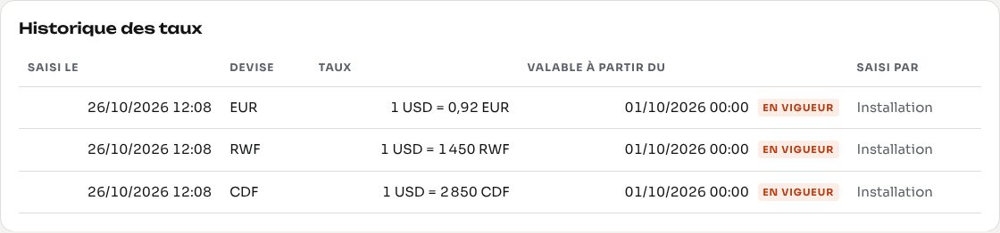
9Codes QR
Chaque code QR ouvre le menu d'un établissement. Un code lié à une zone affiche les prix de cette zone. Menu de gestion → Codes QR.
- Dans Nouveau code QR, choisissez l'établissement, la zone (facultatif) et donnez un libellé (« Table 12 », « Comptoir », « Entrée »).
- Touchez Créer le code QR.
- Imprimer ouvre un chevalet de table prêt à imprimer ; Télécharger (SVG) donne l'image du code pour un imprimeur.
Chaque scan est compté : la carte du code indique le total et les 7 derniers jours. Le tableau de bord additionne les scans de la semaine.

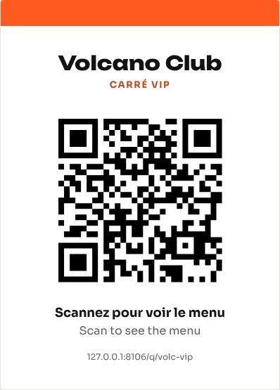
10Mon compte
Votre nom, la langue de l'interface et votre mot de passe. Menu de gestion → Mon compte.
- Nom : affiché en haut du tableau de bord et dans l'historique des taux.
- Langue préférée : s'applique tout de suite sur l'appareil, puis à chaque connexion.
- Mot de passe : saisissez le mot de passe actuel, puis le nouveau (au moins 10 caractères ; une phrase courte est facile à retenir) deux fois.

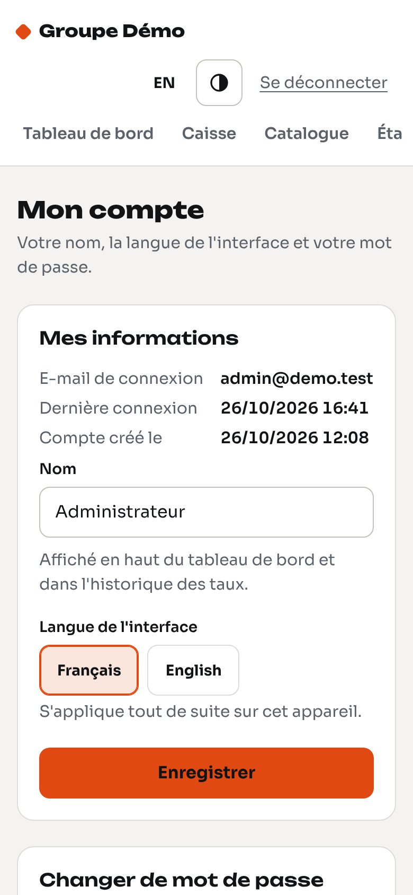
11Système de design
Le design « Volcan », choisi parmi quatre propositions, est décrit dans une page vivante : lien Système de design en bas des pages de gestion, ou /gestion/design.
On y voit les couleurs des thèmes jour et nuit avec leurs contrastes calculés, les couleurs des catégories, la typographie (Unbounded pour les titres, Sora pour le texte) et tous les composants : boutons, badges, champs, tableaux, tuiles de caisse. C'est la référence pour tout nouvel écran.
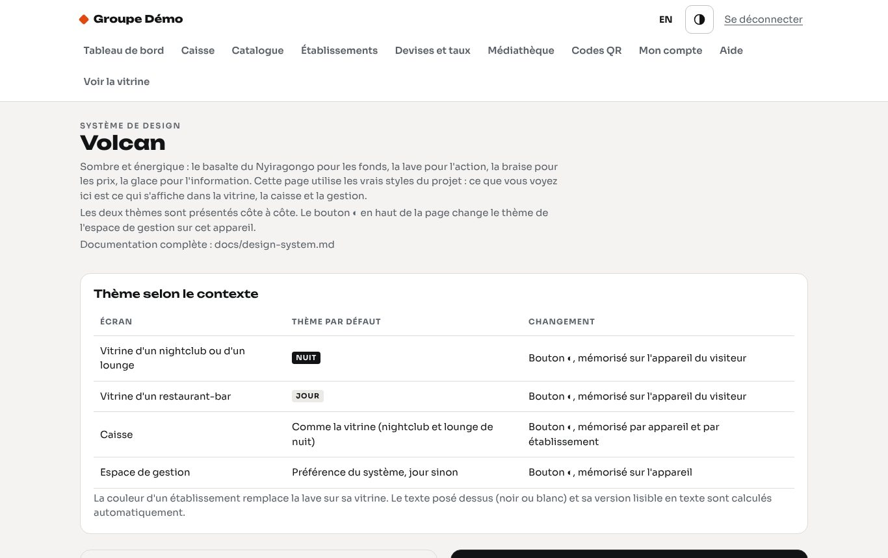
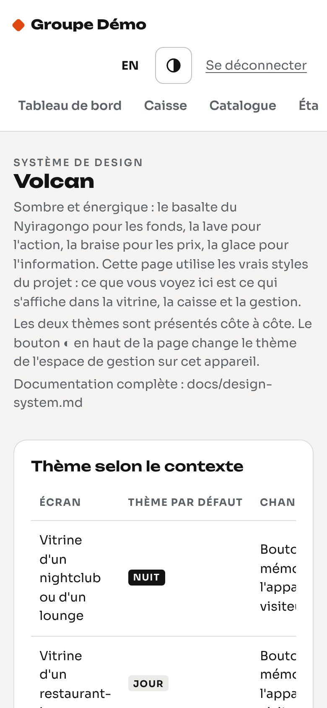
12Questions fréquentes
- Un produit n'apparaît pas sur le menu ni à la caisse.
- Ouvrez sa fiche : un message en haut indique ce qui manque. Le plus souvent, aucun format vendu n'a de prix, ou aucun établissement n'est coché dans « Où il est vendu ». Vérifiez aussi qu'il n'est pas désactivé et que sa catégorie n'est pas cachée du menu.
- Le prix en francs n'est pas celui que j'attendais.
- Une case vide est convertie avec le taux du jour puis arrondie selon la devise (à 100 FC dans la démonstration). Pour un montant précis, remplissez la case du tableau des prix.
- Un produit est épuisé : comment le cacher vite ?
- Catalogue → touchez le bouton « Disponible » du produit. Il passe en épuisé sur la vitrine et la caisse. Un second toucher le remet en vente.
- Le club affiche « Fermé » alors qu'il est 1 h du matin.
- Vérifiez la ligne d'horaires de la veille : pour un service qui passe minuit, l'heure de fermeture doit être plus petite que l'heure d'ouverture (22:00 → 05:00), et le jour coché est celui de l'ouverture.
- Le code QR de la terrasse affiche les prix normaux.
- Le code doit être lié à la zone (Codes QR), et la zone doit avoir sa propre grille (Établissements → Zones).
- Où retrouver une photo que j'ai retirée d'un produit ?
- Dans la médiathèque : retirer une photo d'un produit ne l'efface pas. Filtrez « Non utilisées » pour la retrouver.
- La photo est refusée.
- Formats acceptés : JPEG, PNG ou WebP. La taille maximale est affichée sous le champ ; elle dépend de la configuration du serveur.
- Le thème ne me convient pas sur cet appareil.
- Touchez ◐ : le choix est mémorisé sur l'appareil (par établissement pour la caisse).
- Puis-je encaisser ?
- Pas encore : l'encaissement, les sessions de caisse et le stock arrivent avec la phase 3. La caisse sert aujourd'hui à composer un ticket et à voir les totaux dans chaque devise.
13Partie technique
Pour la personne qui installe et met à jour le logiciel.
Technologie
PHP 8.1 ou plus sans framework ni dépendance, MySQL 8 ou MariaDB 10.6+ (une base par client), HTML, CSS et JavaScript natifs.
Créer un client
php bin/creer-instance.php monbar --email=gerant@monbar.cd --nom="Mon Bar"
# avec les données de démonstration :
php bin/creer-instance.php demo --email=admin@demo.test --demo --db-hote=localhostLe script crée la base, un utilisateur MySQL dédié, les tables, le compte administrateur (il affiche son mot de passe) et le fichier config/instances/monbar.php.
Mettre à jour
php bin/migrer.php --toutesApplique les évolutions de la base de données (database/migrations/) à tous les clients, une seule fois et dans l'ordre.
Mise en production
- Un enregistrement DNS générique *.<domaine> et un certificat HTTPS générique.
- Racine web : le dossier public/. Apache utilise public/.htaccess ; avec Nginx : try_files $uri /index.php?$query_string;.
- Dans config/app.local.php : domaine_base et instance_par_defaut à null.
- Photos jusqu'à 8 Mo : upload_max_filesize = 8M et post_max_size = 10M dans PHP. Le dossier public/uploads/ doit être accessible en écriture.
Photos libres de droits pour la démonstration
La démonstration utilise des illustrations SVG. Un import de photos libres depuis Wikimedia Commons est prêt (php bin/importer-photos.php --instance=demo --essai), mais il demande d'autoriser commons.wikimedia.org et upload.wikimedia.org dans le réseau du serveur ; il n'a pas encore pu être lancé. Détails dans docs/photos.md.
Documents de référence
- docs/cahier-des-charges.md : le cahier des charges complet et les 8 phases.
- docs/design-system.md : le système de design Volcan.
- README.md : installation et organisation du code.